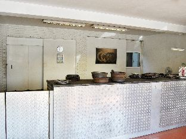
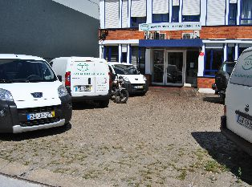

Experiência
Vinte anos de recuperação de peças auto, da viatura de dia-a-dia ao tractor agrícola.
01 — Empresa
Vinte anos de mãos na peça. Técnicos capazes de o aconselhar sobre a embraiagem apropriada para cada utilização.
Início / Empresa
A TDE Lda. é uma empresa com vinte anos de experiência em recuperação de peças auto. Temos técnicos capazes de o aconselhar sobre a embraiagem apropriada, seja para competição, profissional, amadora ou mesmo mais resistente para aguentar modificações feitas no automóvel para o dia-a-dia.
Ao longo de duas décadas, especializámo-nos na recuperação e rectificação de componentes de fricção: embraiagens simples e de competição, volantes bimassa e monomassa, calços e cintas de travão, discos e tambores. Cada peça que sai das nossas instalações na Zona Industrial do Porto é verificada por técnicos experientes, porque a sua segurança na estrada — ou na pista — é a nossa prioridade.


02 — Pilares
Vinte anos de recuperação de peças auto, da viatura de dia-a-dia ao tractor agrícola.
Técnicos capazes de indicar a embraiagem apropriada para cada utilização.
Todas as intervenções são realizadas com garantia e total responsabilidade.
Soluções para competição, uso profissional, amador ou automóveis modificados.
03 — Marcas
Contacto
Estamos na Zona Industrial do Porto. Passe por cá ou ligue-nos — respondemos em horário laboral.
Contactar